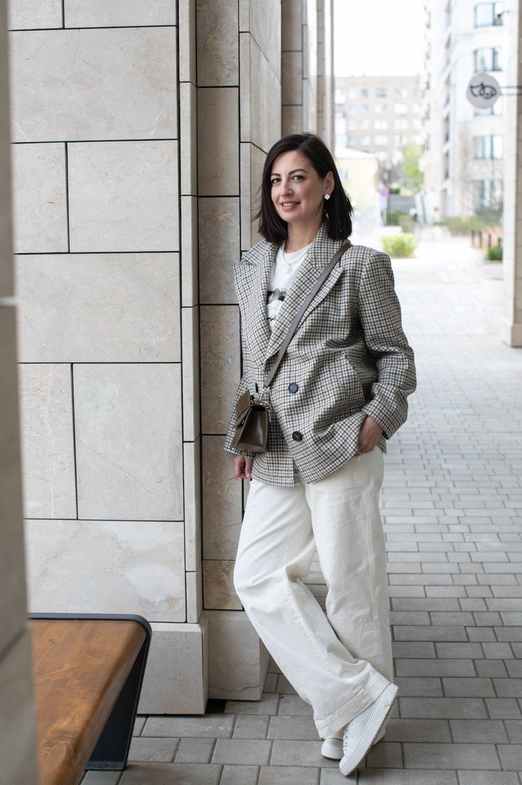

Управленческий партнёр для руководителей
Анна
Полканова
Помогаю разобраться в сложных управленческих ситуациях, найти причины, когда они неочевидны, и провести изменения, когда одного решения недостаточно.
Обсудить задачуФорматы работы
-
01
Разбор управленческой ситуации
Когда нужно понять, что происходит, увидеть ситуацию шире и определить варианты действий.
Конкретная ситуация. Второй управленческий взгляд. Решение остаётся за вами.
Подробнее -
02
Управленческая диагностика
Когда результат не устраивает, а причина неочевидна.
Исследую конкретную ситуацию, проверяю возможные причины и определяю, что действительно требует изменений.
Подробнее -
03
Управленческое сопровождение
Когда понятно, что нужно менять, но изменения требуют времени, последовательности и готовности корректировать решения по ходу.
Работаю с реальными управленческими задачами в процессе изменений: разбираю возникающие ситуации, помогаю принимать решения, смотрю на результат и при необходимости корректирую действия.
Подробнее
Почему со мной

Я прошла путь от линейной позиции через руководство отделами продаж и маркетинга до коммерческого директора, генерального директора и куратора филиалов.
Более 20 лет работаю в B2B: продажи, команды, руководители, KPI и мотивация, распределение ответственности, взаимодействие функций и финансовый результат.
- с ≈1 до 2 млрд ₽ в годрост продаж бизнеса после стагнации
- +42% за первый годрост продаж филиала после двух лет отрицательной динамики и изменений в команде, ролях и KPI
Но для меня один из главных показателей качественного управления — это не только цифры.
Команды и системы, которые я создавала, продолжают работать без моего постоянного участия.
Мой подход
Найти причину, а не работать только с тем, что видно на поверхности
Проблема «в людях» иногда оказывается проблемой ролей, процессов или управления.
Невыполнение плана — не обязательно проблема отдела продаж.
Конфликт между подразделениями — не обязательно проблема конкретных людей.
Поэтому я не начинаю с готового ответа.
Смотрю на ситуацию целиком, проверяю первоначальную версию и помогаю отделить факты от предположений.
Я не принимаю решения вместо руководителя. Моя задача — помочь увидеть больше, проверить решение и определить дальнейшие действия.
Форматы работы подробнее
01
Разбор управленческой ситуации
Иногда, чтобы принять сильное решение, нужен второй взгляд
С чем можно прийти
01Люди и команда
- Есть сомнения, на своём ли месте человек.
- Нужно решить: развивать, предложить другую роль или расстаться.
- Нужно выбрать человека на ключевую позицию.
02Управление и ответственность
- Сотрудники постоянно приходят ко мне за решениями.
- Делегирую, но в итоге всё равно приходится включаться самому.
- Не всегда понятно, когда вмешиваться, а когда дать команде разобраться самостоятельно.
03Структура и взаимодействие
- Сотрудники ищут виноватых вместо того, чтобы договориться и найти решение.
- Зоны ответственности пересекаются или остаются без ответственного.
- KPI и мотивация не соответствуют реальной ответственности или целям бизнеса.
04Сложные решения
- Есть несколько разумных вариантов, и выбор неочевиден.
- Нужно принять решение по сотруднику, но у каждого варианта есть свои последствия.
- Нужно провести через команду сложное или непопулярное решение.
Что останется после встречи
- Больше ясности в том, что происходит.
- Возможные варианты действий.
- Понимание рисков и последствий.
- Следующий шаг или понимание, каких фактов пока не хватает для решения.
Формат
Разбор управленческой ситуации
90 минут онлайн
До встречи — 5 коротких вопросов.
После — краткое резюме разбора.
25 000 ₽
Записаться на разбор02
Управленческая диагностика
Когда результат не устраивает, а причина неочевидна
Я не диагностирую всю компанию. Исследую конкретную ситуацию настолько глубоко, насколько необходимо, чтобы понять её причины.
С какими запросами можно прийти
- Продажи перестали расти или снижаются, хотя очевидной причины нет.
- Команда выросла, а результат — нет.
- Сильные сотрудники регулярно уходят.
- Новые сотрудники не приживаются или долго не выходят на ожидаемый результат.
- Уже пробовали менять людей, процессы, KPI или мотивацию, но ожидаемого эффекта не получили.
- Проблему исправляют в одном месте, но через некоторое время она проявляется снова или возникает в другом.
Что происходит во время диагностики
- 01
Сначала вместе с вами формулирую один конкретный вопрос, на который нужно получить ответ.
- 02
Я определяю, какие данные необходимо проверить. В зависимости от задачи это могут быть показатели, структура, функции, KPI, данные по сотрудникам, продажи, рынок и другие материалы.
- 03
Проверяю несколько возможных объяснений и сопоставляю их с фактами.
Результат
По итогам будет понятно:
- что действительно влияет на результат;
- какими фактами подтверждаются выводы;
- какие первоначальные версии не подтвердились;
- что имеет смысл менять в первую очередь.
После диагностики вы получите краткий письменный документ с выводами и итоговую встречу, на которой я разберу их с вами.
Диагностика отвечает на вопрос: «Почему это происходит и что требует изменений?»
Формат
Объём и стоимость определяются после короткой установочной встречи и зависят от вопроса, который необходимо исследовать.
Установочная встреча — 30 минут, бесплатно.
Например: 3 встречи по 90 минут × 20 000 ₽.
Обсудить задачу03
Управленческое сопровождение
Когда понятно, что нужно менять, но изменения требуют времени, последовательности и готовности корректировать решения по ходу
С чем можно работать
- Изменились внешние обстоятельства, и нужно адаптировать под них работу бизнеса или подразделения.
- Нужно перестроить бизнес-процессы, финансовую модель, роли и ответственность для устойчивого финансового результата.
- Рост бизнеса ограничен человеческими ресурсами: нужно развивать руководителей и передавать им больше самостоятельности.
- Вы хотите роста, а команде достаточно текущего результата.
- Нужно изменить KPI и систему мотивации под новые цели бизнеса.
- Нужно изменить взаимодействие между руководителями или подразделениями.
- Изменения уже начались, но по ходу возникают новые ситуации, требующие управленческих решений.
Как я работаю
- 01
Фиксирую вместе с вами, что должно измениться и какого результата вы ожидаете.
- 02
Регулярно встречаюсь с вами и разбираю то, что происходит в процессе изменений: что сработало, где возникли сложности и какие решения необходимо принять дальше.
- 03
Между встречами вы реализуете решения внутри компании.
- 04
Если первоначальный вариант не работает — корректирую действия с учётом реального результата.
Моя роль
Я не становлюсь руководителем вашей команды и не принимаю решения вместо вас.
Я — внешний управленческий партнёр, с которым можно проверить решение, разобрать возникшую ситуацию, увидеть возможные последствия и определить следующий шаг.
Изменения проводите вы. Моя задача — помочь пройти их так, чтобы в итоге система работала без моего постоянного участия.
Формат
Регулярные встречи в течение периода, достаточного для реализации изменений и оценки результата.
Задачу, продолжительность и частоту встреч определяю с вами до начала работы.
Обсудить сопровождениеНе уверены, какой формат вам нужен?
Не обязательно определять это самостоятельно.
Коротко опишите ситуацию: что происходит, что вас сейчас не устраивает и какой вопрос вы хотите решить.
Я посмотрю запрос и предложу формат, который соответствует задаче.
Обсудить задачуС кем я не работаю
По личным ценностям и принципам я не работаю с производителями и поставщиками средств индивидуальной защиты.